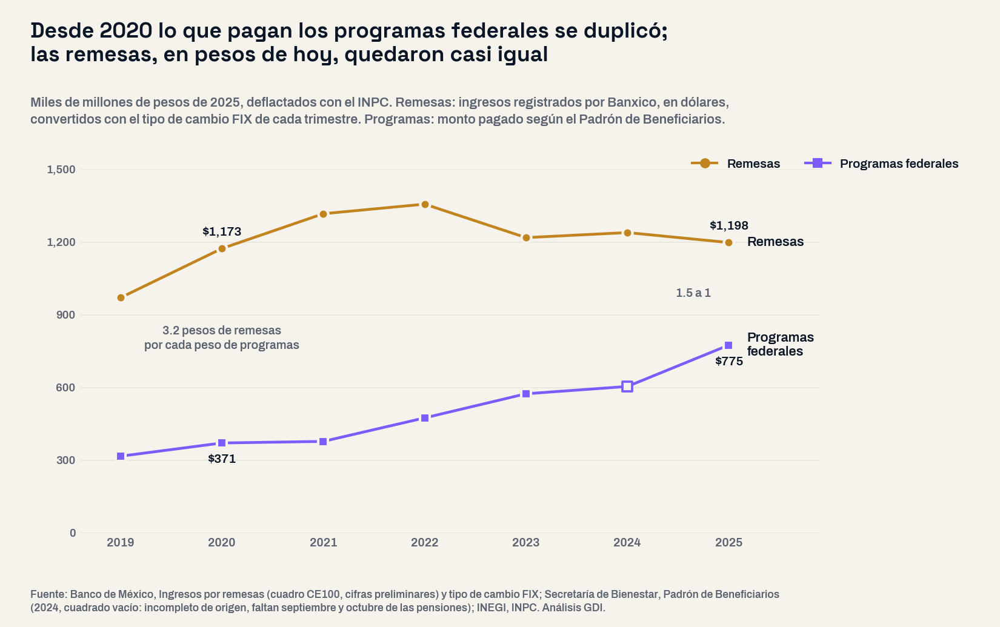
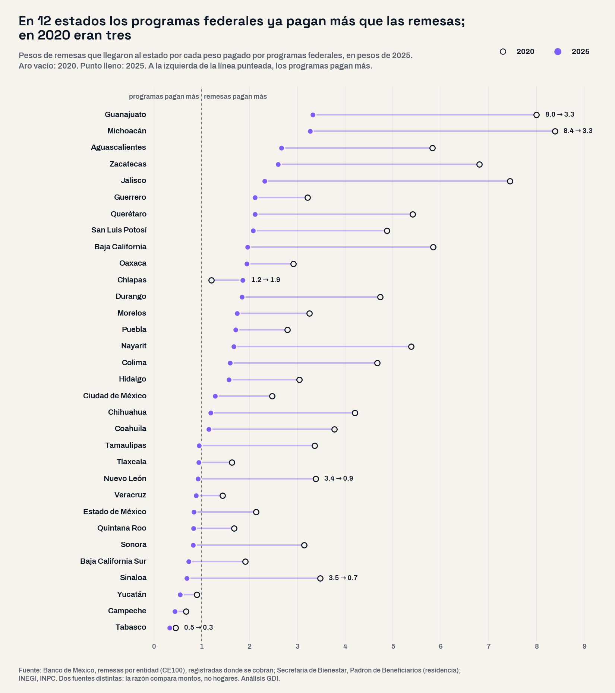

Este análisis partió de una pregunta abierta: ¿en qué municipios hay más hogares que reciben dinero del extranjero o de programas de gobierno, dónde se juntan las dos cosas y qué tienen en común los que encabezan? Se ordenaron los 32 estados y los 2,471 municipios con dato de la Encuesta Intercensal 2025 por la proporción de hogares que recibe cada fuente, sin agruparlos de antemano, y se compararon con los montos que registran el Banco de México (remesas) y el Padrón de Beneficiarios de la Secretaría de Bienestar (programas federales). La pobreza y el tamaño de cada municipio se leyeron después, como columnas aparte.
Contexto: la mitad de los hogares
La Intercensal 2025 del INEGI preguntó a cada hogar si alguno de sus integrantes recibe dinero de cuatro fuentes distintas al trabajo: de alguien que vive en otro país, de alguien que vive en otra vivienda dentro del país, de programas de gobierno y por jubilación o pensión, sin preguntar montos. En 2025, 50.1% de los hogares recibe al menos una de esas fuentes: 19.9 millones de hogares, contra 38.5% en el Censo 2020. El salto viene de los programas de gobierno, que pasaron de 25.0% a 41.4% de los hogares (16.4 millones). Las jubilaciones y pensiones subieron de 13.0% a 16.6%. Bajaron las dos fuentes que dependen de otras personas: el dinero de otra vivienda del país (6.1% a 5.2%) y el del extranjero, de 5.1% a 4.7% (1.9 millones de hogares). En 2020 la pregunta se captó por vivienda y en 2025 por hogar, con otros ejemplos de programas; el INEGI compara ambos años con esa salvedad.
Radiografía: el dinero se movió hacia los programas
Según el Padrón de Beneficiarios, los programas federales pagaron $774.7 mil millones de pesos en 2025, contra $371.1 mil millones en 2020 medidos en pesos de 2025: 108.8% más en términos reales. El 85.7% del aumento fue en pensiones, sobre todo la de adultos mayores, que en 2025 pagó $473.1 mil millones a 13.1 millones de personas. Las remesas crecieron 49.8% en dólares, de US$41.7 mil millones a US$62.5 mil millones según el Banco de México, pero el peso se apreció y los precios subieron. En pesos de 2025, las remesas de 2025 ($1,197.9 mil millones) son apenas 2.1% más que las de 2020 y 11.7% menos que su máximo de 2022. En 2020 llegaban 3.2 pesos de remesas por cada peso de programas federales; en 2025, 1.5.

Alerta 1: en 12 estados los programas ya pagan más que las remesas
Por estado, los programas federales ya pagan más que las remesas en 12 estados; en 2020 eran tres: Campeche, Tabasco y Yucatán, donde las remesas siempre fueron pocas (en Tabasco llegan 33 centavos de remesas por cada peso de programas). En los nueve que se sumaron, el monto de los programas creció entre 77.6% (Veracruz) y 188.1% (Nuevo León) en términos reales, y en cinco del norte las remesas además bajaron: Sinaloa -50.6%, Sonora -30.3%, Tamaulipas -30.0%, Nuevo León -21.5% y Baja California Sur -9.0%. En el otro extremo, Guanajuato y Michoacán todavía reciben 3.3 pesos de remesas por cada peso de programas; en 2020 eran 8.0 y 8.4.

El monto de los programas creció más donde había menos pobreza (correlación de rangos de -0.80 con la pobreza estatal de 2020): 200.1% real en Baja California y 188.1% en Nuevo León, contra 10.9% en Tabasco y 56.6% en Chiapas. La razón es la composición: el aumento vino sobre todo de la pensión de adultos mayores, universal desde los 65 años tras la reforma constitucional de 2024, que en 2020 ya era 77.6% de lo pagado en Nuevo León y solo 16.9% en Tabasco, donde pesaban más los apoyos al campo, que crecieron mucho menos.
Alerta 2: 775 municipios donde siete de cada diez hogares reciben dinero que no viene del trabajo
Por municipio, en 2,058 de los 2,471 con dato al menos la mitad de los hogares recibe alguna de las cuatro fuentes. En 775 son siete de cada diez o más (702 con certeza estadística). Son municipios pequeños, con una mediana de 1,164 hogares, que suman 1.9 millones de hogares, 4.7% del país: 410 en Oaxaca, 80 en Puebla, 51 en Guerrero, 40 en Veracruz y 39 en Yucatán. Su pobreza mediana en 2020 era de 81.8% y apenas 3.8% de sus hogares cobra una jubilación o pensión.
Alerta 3: las remesas tienen su propio mapa
La pregunta inicial suponía que remesas y programas se juntan en los mismos lugares. No es así. En ninguno de los 2,471 municipios son más los hogares que reciben dinero del extranjero que los que reciben algún programa de gobierno. Los programas siguen a la pobreza: la correlación de rangos entre la proporción de hogares con programas y la pobreza municipal de 2020 es de 0.70, y la de jubilaciones, de -0.77. Las remesas casi no la siguen: 0.10.
En 609 municipios la proporción de hogares que recibe dinero del extranjero triplica la nacional (14.2% o más; 556 con certeza estadística): 201 en Oaxaca, 57 en Michoacán, 52 en Puebla, 51 en Guerrero y 46 en Jalisco. Su pobreza mediana (65.5%) es casi la del resto (61.6%), pero son más chicos y casi no tienen pensiones de retiro (5.6% de los hogares, contra 8.7%). Ahí sí coinciden con los programas: en 87.4% de ellos la mitad o más de los hogares recibe uno, contra 59.9% del resto. Encabeza San Miguel Panixtlahuaca, Oaxaca, con 52.0% de sus hogares (dato censal).
| Estado | Hogares con programas de gobierno, 2020 → 2025 | Hogares con dinero del extranjero, 2020 → 2025 | Hogares con jubilación o pensión, 2025 | Pesos de remesas por peso de programas federales, 2020 → 2025 |
|---|---|---|---|---|
| Tabasco | 32.6% → 48.9% | 1.8% → 1.9% | 10.2% | 0.45 → 0.33 |
| Campeche | 30.4% → 48.4% | 2.0% → 2.7% | 16.1% | 0.68 → 0.44 |
| Yucatán | 32.5% → 45.6% | 2.1% → 1.9% | 18.9% | 0.90 → 0.55 |
| Sinaloa | 27.9% → 45.5% | 6.2% → 5.5% | 24.6% | 3.48 → 0.69 |
| Baja California Sur | 20.5% → 31.0% | 2.2% → 1.9% | 16.2% | 1.91 → 0.73 |
| Sonora | 18.4% → 38.1% | 4.0% → 3.5% | 23.3% | 3.14 → 0.82 |
| Quintana Roo | 15.4% → 25.8% | 1.9% → 1.4% | 10.0% | 1.68 → 0.83 |
| Estado de México | 18.4% → 38.9% | 2.2% → 2.0% | 16.6% | 2.14 → 0.84 |
| Veracruz | 31.9% → 48.5% | 3.5% → 4.4% | 14.4% | 1.44 → 0.88 |
| Nuevo León | 15.4% → 28.3% | 2.2% → 1.6% | 22.0% | 3.39 → 0.92 |
| Tlaxcala | 23.2% → 40.4% | 2.9% → 3.2% | 12.5% | 1.63 → 0.94 |
| Tamaulipas | 20.3% → 36.6% | 4.5% → 3.6% | 18.7% | 3.37 → 0.95 |
| Coahuila | 17.1% → 32.1% | 4.0% → 3.2% | 23.6% | 3.77 → 1.15 |
| Chihuahua | 18.2% → 32.4% | 5.5% → 4.5% | 21.2% | 4.21 → 1.19 |
| Ciudad de México | 29.3% → 48.5% | 2.0% → 1.7% | 24.5% | 2.48 → 1.28 |
| Hidalgo | 32.9% → 44.8% | 6.1% → 6.4% | 12.8% | 3.05 → 1.57 |
| Colima | 22.0% → 45.3% | 7.0% → 6.3% | 19.8% | 4.67 → 1.60 |
| Nayarit | 25.3% → 41.6% | 11.6% → 8.9% | 17.4% | 5.38 → 1.67 |
| Puebla | 29.1% → 44.3% | 5.1% → 5.8% | 11.2% | 2.79 → 1.71 |
| Morelos | 22.2% → 42.3% | 7.0% → 5.9% | 18.3% | 3.25 → 1.74 |
| Durango | 27.4% → 41.1% | 10.2% → 9.7% | 20.3% | 4.74 → 1.84 |
| Chiapas | 38.1% → 53.0% | 2.5% → 4.2% | 6.5% | 1.20 → 1.86 |
| Oaxaca | 42.0% → 56.9% | 7.6% → 8.9% | 9.1% | 2.92 → 1.94 |
| Baja California | 13.9% → 28.4% | 6.1% → 4.0% | 16.5% | 5.84 → 1.96 |
| San Luis Potosí | 30.0% → 44.5% | 7.8% → 7.7% | 16.2% | 4.87 → 2.08 |
| Querétaro | 17.4% → 32.4% | 4.1% → 4.2% | 16.0% | 5.41 → 2.11 |
| Guerrero | 43.2% → 57.0% | 10.9% → 10.8% | 10.7% | 3.21 → 2.12 |
| Jalisco | 18.5% → 33.1% | 6.7% → 5.1% | 17.7% | 7.44 → 2.32 |
| Zacatecas | 28.7% → 45.6% | 13.2% → 13.0% | 13.0% | 6.80 → 2.60 |
| Aguascalientes | 20.5% → 35.2% | 7.1% → 6.6% | 20.2% | 5.83 → 2.67 |
| Michoacán | 27.1% → 42.3% | 12.3% → 10.9% | 12.0% | 8.39 → 3.27 |
| Guanajuato | 22.9% → 45.1% | 8.7% → 8.6% | 14.6% | 8.00 → 3.32 |
| Nacional | 25.0% → 41.4% | 5.1% → 4.7% | 16.6% | 3.16 → 1.55 |
Sombreados: los programas ya pagan más que las remesas. Hogares: INEGI, Intercensal 2025 y Censo 2020 (viviendas). Razón: Banxico y Padrón de Beneficiarios en pesos de 2025; compara montos de dos fuentes.
Alerta 4: el monto de remesas no es el ingreso del municipio
El Banco de México registra cada remesa donde se cobra, no donde vive quien la recibe. En Chiapas la distancia ya es enorme: entre 2019 y 2025 las remesas cobradas en el estado se multiplicaron por 4.0, de US$1,035 millones a US$4,183 millones, y su parte del total nacional pasó de 2.8% a 6.7%. En 2025 se cobraron ahí más que en Oaxaca (US$3,531 millones) o Guerrero (US$3,407 millones), pero según la Intercensal los hogares que reciben dinero del extranjero en Chiapas son unos 64 mil, contra 110 mil en Oaxaca y 107 mil en Guerrero. En San Cristóbal de las Casas se cobraron US$929 millones en 2025, casi lo mismo que en Tijuana (US$991 millones), el primer municipio del país; solo 2.0% de sus hogares (intervalo de 1.7% a 2.4%) dice recibir dinero del extranjero. Los datos no dicen quién cobra ese dinero; sí dicen que no es ingreso de los hogares del municipio.
Datos complementarios
Recibir un programa no es vivir de él: en la ENIGH 2024 del INEGI, anterior a los programas que empezaron en 2025, el trabajo aportó 65.6% del ingreso corriente de los hogares, las jubilaciones 8.0% y los programas de gobierno 3.2%. La misma dependencia de lo que llega de fuera se ve en las haciendas locales: la mitad de los municipios no genera ni 5 de cada 100 pesos de su presupuesto.
Implicaciones para la gestión pública
1. Medir la dependencia en el diagnóstico. En 775 municipios siete de cada diez hogares reciben dinero que no viene del trabajo. Un cambio en el calendario de pagos, en las reglas de un programa o en el tipo de cambio pega directo en su economía.
2. No planear con el monto de remesas por municipio. Es el lugar de cobro y, como muestra Chiapas, puede no corresponder a los hogares. Para contar hogares, la fuente es la Intercensal, con su margen de error.
3. Prever el efecto del peso. De enero a septiembre de 2026 las remesas subieron 2.1% en dólares, pero cayeron 12.2% en pesos de 2025, con caída real en 31 de los 32 estados. En los 609 municipios con más hogares receptores es ingreso local que se pierde sin aparecer en ninguna cuenta pública.
4. Ver el pendiente del empleo formal. La jubilación depende de haber cotizado. Que solo 3.8% de los hogares la tenga en los 775 municipios más dependientes muestra el tamaño de ese pendiente.
5. Ponerlo en el plan. Nuestra guía del plan municipal de desarrollo explica cómo construir el diagnóstico con estas fuentes.
Conclusión
Entre 2020 y 2025 cambió de dónde sale el dinero que los hogares reciben sin trabajar por él. Los programas federales duplicaron lo que pagan en términos reales y las remesas, en pesos de hoy, quedaron casi igual; en 12 estados los programas ya pesan más. Para estados y municipios, el diagnóstico ya no puede preguntar solo cuánto produce el territorio, sino cuánto de lo que se gasta ahí viene de fuera.
¿Cuántos hogares de tu municipio reciben programas o remesas?
En la plataforma de GDI puedes consultar los hogares que reciben programas de gobierno y dinero del extranjero según la Intercensal 2025, el monto pagado por programas federales en tu municipio, la pobreza y las finanzas públicas municipales, para diagnosticar tu territorio con fuentes oficiales integradas.
Explorar mi territorioPreguntas frecuentes
¿Cuántos hogares reciben programas de gobierno en México?
41.4% de los hogares en 2025, unos 16.4 millones, según la Encuesta Intercensal 2025 del INEGI. En 2020 eran 25.0% de las viviendas.
¿Cuántos hogares reciben remesas?
4.7% de los hogares en 2025, unos 1.9 millones, contra 5.1% en 2020. Zacatecas (13.0%), Michoacán (10.9%) y Guerrero (10.8%) tienen la proporción más alta.
¿Qué es más grande, las remesas o los programas federales?
En el país, las remesas: $1,197.9 mil millones de pesos en 2025 contra $774.7 mil millones de los programas federales. Pero en 12 estados los programas ya pagan más.
¿En qué estados pagan más los programas que las remesas?
En 2025: Baja California Sur, Campeche, Estado de México, Nuevo León, Quintana Roo, Sinaloa, Sonora, Tabasco, Tamaulipas, Tlaxcala, Veracruz y Yucatán. En 2020 solo eran Campeche, Tabasco y Yucatán.
Datos técnicos
Fuentes: INEGI, Encuesta Intercensal 2025: comunicados 54/26 a 86/26 (22 de septiembre de 2026), estimaciones municipales con intervalo de confianza de 95% y coeficiente de variación, y marco conceptual (2026); INEGI, Censo de Población y Vivienda 2020 (cuestionario ampliado, vía los comunicados); Banco de México, Sistema de Información Económica: ingresos por remesas por entidad (CE100) y por municipio (CE166), cifras preliminares, y tipo de cambio FIX (CF86); Secretaría de Bienestar, Padrón de Beneficiarios 2019-2025; medición de pobreza estatal y municipal; INEGI, ENIGH 2024 e INPC. Todo se consultó en la capa de datos validada de Lokus, excepto los comunicados del INEGI y las series de Banco de México.
Método: los porcentajes nacionales y estatales de hogares son los que publica el INEGI. Las remesas se convierten a pesos con el FIX promedio de cada trimestre (21.49 pesos por dólar en promedio en 2020 y 19.22 en 2025) y, como el Padrón, se expresan en pesos de 2025 con el INPC. La razón remesas/programas compara montos de dos fuentes distintas: las remesas se registran donde se cobran y el Padrón por municipio de residencia. 2024 no se usa para comparar: al Padrón le faltan septiembre y octubre de las pensiones. Ningún municipio con coeficiente de variación mayor a 15% entra a una lista; los 7 con muestra insuficiente quedan fuera. Correlaciones de rangos de Spearman.
Advertencias metodológicas: la Intercensal es una encuesta por muestreo, salvo en 750 municipios donde fue censo; no capta montos. En 2020 la pregunta se captó por vivienda y en 2025 por hogar, y cambiaron los ejemplos de programas, que en 2025 incluyen apoyos estatales y municipales; el Padrón solo cubre programas federales. Las cifras de remesas son preliminares. El análisis describe lo que muestran los datos; no atribuye causas a la diferencia entre lo cobrado y los hogares en Chiapas.
Clasificación SCIAN: las fuentes principales son encuestas de hogares y registros administrativos sin clasificación por actividad. Las remesas se pagan por medio de bancos (522110), centros cambiarios (523122) y otros intermediarios financieros, que este análisis no estudia.
Nota: el análisis partió de una pregunta abierta y del universo completo de estados y municipios ordenado por cada fuente de ingreso; los grupos y el patrón emergen de los datos, no de una clasificación previa.
Análisis: GDI — Gobierno Digital e Innovación · Fecha de análisis: 20 de noviembre de 2026 · gobiernodigitaleinnovacion.com